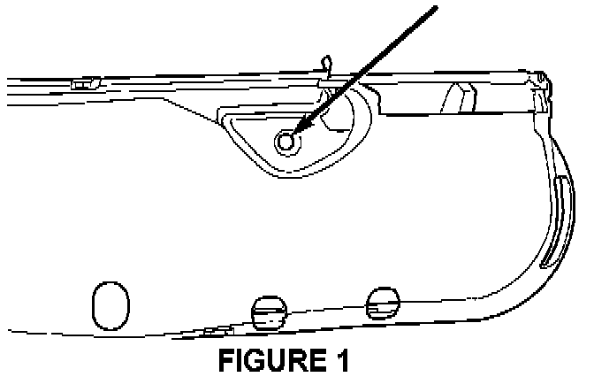
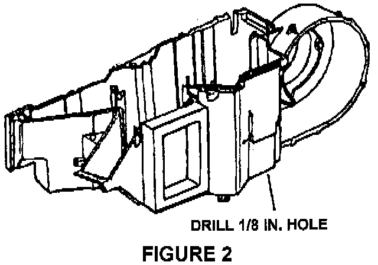
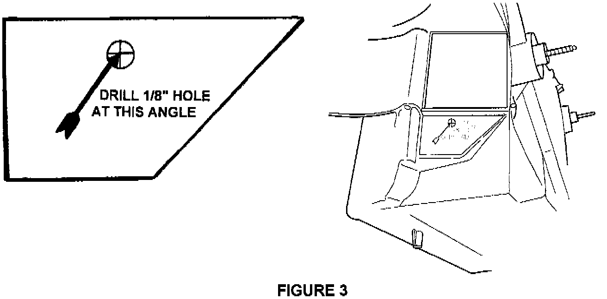

Repair Procedure
This bulletin involves inspecting for leaves or other foreign material in the evaporator and HVAC housing and applying Mopar aerosol evaporator cleaner.NOTE:
FOLLOW ALL CAUTIONS AND WARNING SUPPLIED WITH THE AEROSOL EVAPORATOR CLEANER; KEEP OUT OF REACH OF CHILDREN; AVOID CONTACT WITH SKIN OR EYES; WEAR SKIN AND EYE PROTECTION, IF SKIN OR EYE CONTACT OCCURS, WASH SKIN OR FLUSH EYES WITH GENEROUS AMOUNTS OF WATER; AVOID BREATHING VAPORS.
1. Inspect the evaporator and HVAC housing for leaves or other foreign material that may be blocking the air flow through the evaporator. If the build up is excessive replacement of the evaporator may be required.
2. With the parking brake applied and the transmission in Park, start the engine and let idle. Put the temperature control to full hot, blower speed to HIGH, select the PANEL and RE-CIRCULATE modes. Open all windows about 13 mm (1/2 in.). Disable the A/C compressor clutch by disconnecting its wiring connector or the wiring connector to the A/C pressure switch.
NOTE:
THIS PROCEDURE HEATS THE EVAPORATOR AND CAUSES MOISTURE TO EVAPORATE FASTER. THE SLIGHTLY OPEN WINDOWS ALLOW MOISTURE TO ESCAPE THE VEHICLE WITHOUT LOOSING MUCH HEAT. SOMETIMES, YOU MAY SEE A "FOG" CLOUDING THE WINDOWS. AFTER THIS "FOG" HAS DISAPPEARED CONTINUE TO OPERATE THE HEATER FOR ANOTHER 5 MINUTES. IF THE "FOG" NEVER APPEARED, OPERATE THE HEATER FOR A MINIMUM OF 30 MINUTES.
3. Turn the ignition switch to the OFF position.
4. Gain access to the evaporator cavity to apply the evaporator cleaner by:
AB, 1992-93 AN, GS, JA, JX, LH, NS and PL - Remove evaporator fin temperature sensor access grommet. DO NOT REMOVE THE PROBE FROM THE EVAPORATOR.
BR, TJ, XJ, ZG, ZJ - Remove blower resistor.
For the above vehicles, place a piece of heavy masking tape over the opening in the evaporator housing where the fin temperature sensor access grommet or blower resistor was removed, then punch a small hole for the evaporator cleaner tube to be inserted into.

AA, AC, AG, AJ, AP, and AY - Remove the screw attaching the right side floor duct. Use an 1/8 in. drill bit to drill through the bottom of the screw hole, Figure 1.

1994-98 AN - Drill an 1/8 in. hole at the mid-point of the rounded corner created by the intersection of the vertical and horizontal surfaces of the HVAC housing, refer to Figure 2. Place tape around the drill bit to prevent the bit from entering the housing more a 1/4 in.

AS, ES - Remove the lower right instrument panel. Remove the blower motor cover. Make a template as illustrated below and drill an 1/8 in. hole as shown in Figure 3. Be sure to angle drill as illustrated.
Shake evaporator cleaner aerosol can well and insert the application tube in the access hole created in step 3.
NOTE:
THE APPLICATION TUBE HAS A BLACK MARK AND A RED MARK ON IT INDICATING HOW FAR THE TUBE SHOULD BE INSERTED INTO THE EVAPORATOR CAVITY. THE RED MARK IS FOR AA, AC, AG, AJ, AP, AND AY BODY VEHICLES. THE BLACK MARK IS FOR ALL OTHER VEHICLES.
5. Start the engine and let idle. Set the blower motor to HIGH.
6. Put on goggles and dust mask type breathing protection.
7. Spray the entire contents of the evaporator cleaner into the evaporator cavity.
NOTE:
A "FOG" MAY BE SEEN ENTERING THE PASSENGER COMPARTMENT WHILE THE EVAPORATOR CLEANER IS BEING SPRAYED. THE EVAPORATOR CLEANER WILL NOT STAIN OR HARM THE VEHICLE INTERIOR, BUT GOGGLES AND BREATHING PROTECTION MUST BE WORN DURING CLEANER APPLICATION. DO NOT BREATH VAPORS!
8. When the can is empty, turn the ignition switch to the OFF position and let the vehicle sit for 20 minutes. This time will allow the cleaner to flow over and coat the evaporator fins and case assembly.
9. Install whatever components that were removed to gain access for application of the cleaner. On AS, ES and 1994-1998 AN, seal the access hole drilled in step 3
NOTE:
OWNERS OF NS/GS VEHICLES THAT OPERATE IN CONDITIONS WHERE THE AIR INLET TO THE HVAC HOUSING IS SUBJECT TO FOREIGN MATERIAL, DEBRIS OR OTHER AIRBORNE CONTAMINATES, MAY WANT TO CONSIDER HAVING A MOPAR ACCESSORY CABIN AIR FILTER KIT INSTALLED, P/N 82202509. USE THE INSTRUCTIONS PACKAGED WITH THE KIT TO INSTALL IT.
10. Open all of the vehicle windows about 13 mm (1/2 in.). Start the engine and let idle for a MINIMUM of 30 minutes with the temperature control to full hot, blower speed to HIGH, PANEL and RE-CIRCULATE modes selected. This will dry and cure the evaporator cleaner onto the evaporator coil.
11. Connect the wiring disconnected in step 2 to re-enable the A/C compressor clutch.
12. Verify proper A/C operation.